Take the Pantheon at face value and it is a Roman temple with a Greek portico and a concrete dome. Look closer and it is a building of two ages, an inscription that lies about who built it, and an interior in which the diameter of the room equals its height.
The facade carries the name of Marcus Agrippa, Augustus's general and son-in-law, who built the first Pantheon on this site in 27–25 BC. The building behind the facade is Hadrian's, erected about a century and a half later, after fire had destroyed the earlier temple twice. Hadrian kept Agrippa's inscription, a piece of Augustan branding that has misled visitors ever since. The letters read M·AGRIPPA·L·F·COS·TERTIVM·FECIT — "Marcus Agrippa, son of Lucius, consul for the third time, made this."
What makes the Pantheon extraordinary is not its age but its survival. It is the only ancient Roman building that has come down to us essentially intact, because it never stopped being used. In AD 609 it was consecrated as a Christian church, Santa Maria ad Martyres, and that single act saved it from the quarrying that consumed most of ancient Rome.
Agrippa, Hadrian and the inscription
Agrippa's Pantheon was a rectangular temple, not the round building we see. It burned in AD 80, was restored, burned again around AD 110, and was rebuilt in the reign of Hadrian, whose brick stamps date the work to roughly AD 113–125. Hadrian's architects kept the old facade inscription but turned the temple through 90 degrees, so that the porch faces north into what was then the Campus Martius rather than east over the old temple front.
The result is a hybrid that has puzzled architects for centuries. The portico is a conventional temple front: sixteen monolithic columns of grey and pink granite, about 12.5 metres tall, carrying a pediment that once held bronze reliefs. Behind it, instead of a rectangular cella, is a rotunda 43.3 metres across, its wall about six metres thick, its dome a single shell of concrete. The mismatch between the low porch and the enormous drum is not a mistake; it is two phases of construction pressed together, and the transition block between them is one of the most argued-over pieces of Roman planning.
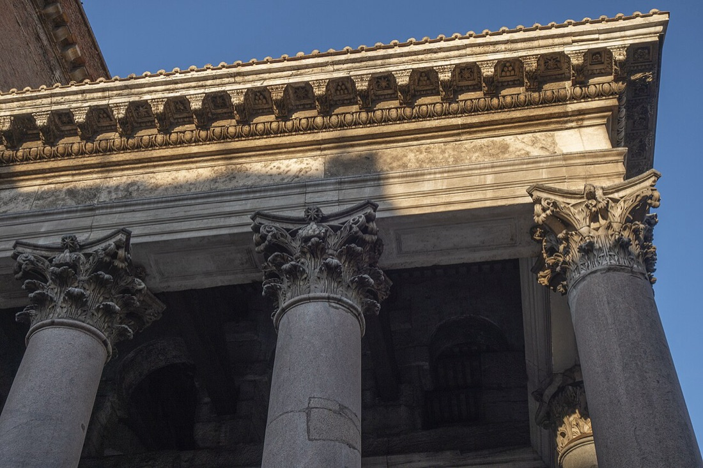
The dome is the real engineering. It is a single shell of concrete, not a double shell, and its thickness tapers from about six metres at the base to less than two at the oculus. The aggregate changes with height: heavy travertine and tufa low down, lighter brick and pumice near the top, so the structure loses weight exactly where it needs to. Five rings of twenty-eight coffers, 140 in all, cut further weight and give the interior its grid of shadow. The oculus — 8.9 metres across — is the only source of light, and the only hole in the shell.
Why did it not collapse? Partly because the concrete was superb, partly because the rotunda is a continuous ring, and partly because the building has been in almost continuous use and repair. It has lost its original marble revetment, its bronze roof tiles were removed in the 7th century, and the portico's bronze trusses were melted down in the 17th, but the structural shell has never failed.
What to look for
Nine things repay the visit, inside and out.
-
The oculus
Look straight up. The opening is 8.9 metres across and has no glass. Rain falls through it; the floor slopes gently to hidden drains, and in heavy weather you can watch visitors edge around the wet patch. The beam of light moves across the coffers and the marble wall through the day, which is the Pantheon's real clock and its real theatre.
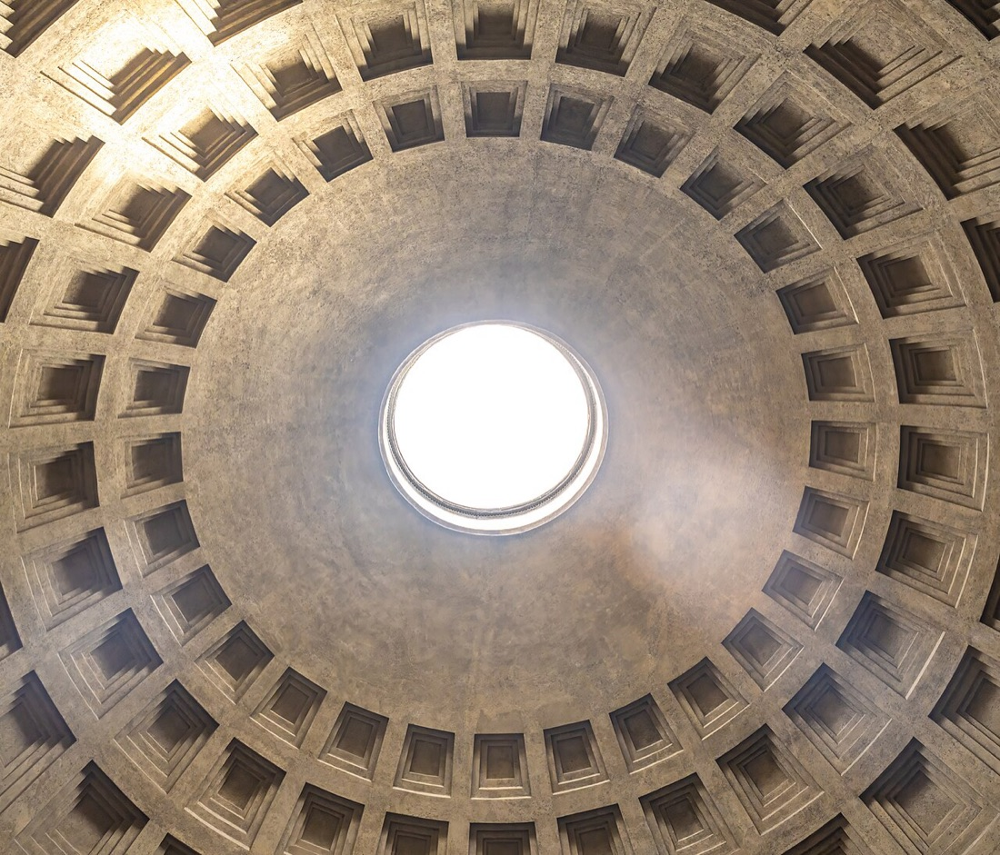
Wilfredor · CC0 · Wikimedia Commons 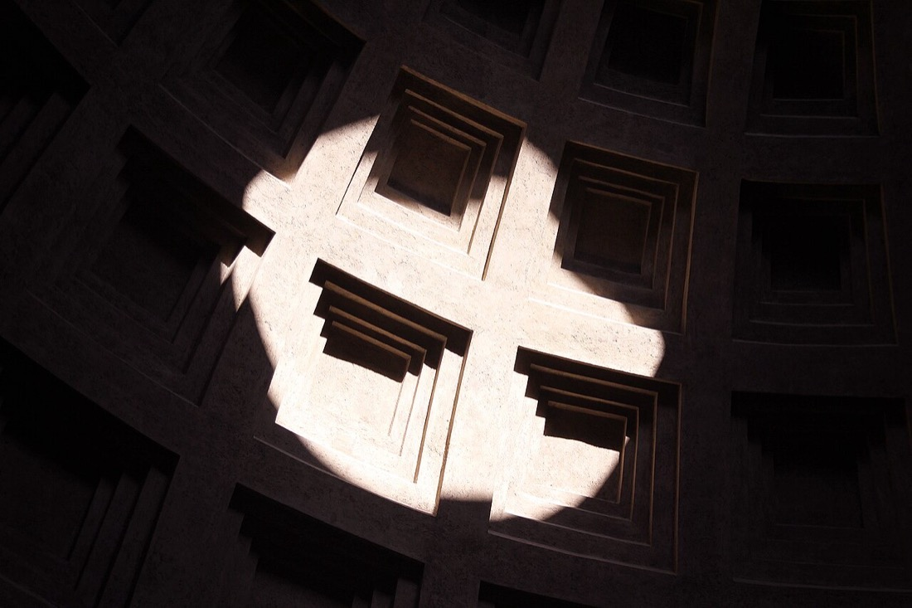
NormanB · CC BY-SA 3.0 · Wikimedia Commons. The oculus as a clock: the beam moves across the coffers through the day. -
The geometry of the dome
Stand at the centre and the room resolves into a sphere: the distance from the floor to the oculus equals the diameter of the rotunda. The coffers are not decoration applied to a surface; they are the surface, and their five rings of twenty-eight are sized to shrink with the curve. The effect is less like standing under a roof than inside a perfectly measured object.
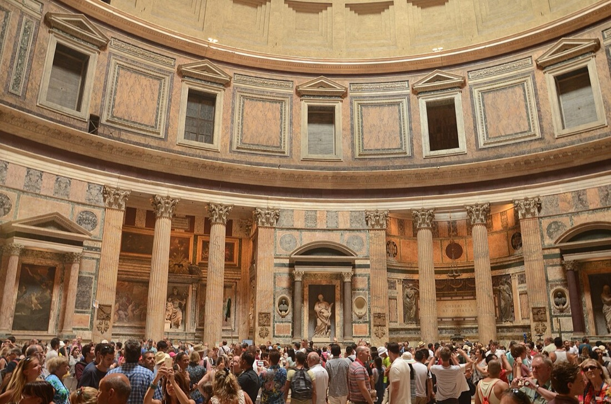
Steven Lek · CC BY-SA 4.0 · Wikimedia Commons. From the door the rotunda and dome read as one sphere. 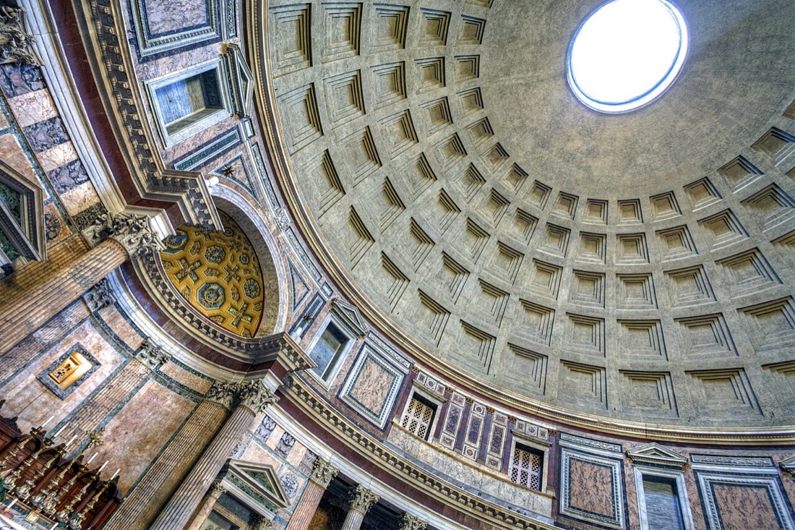
Anne Dirkse (www.annedirkse.com) · CC BY-SA 4.0 · Wikimedia Commons. Five rings of twenty-eight coffers, sized to the curve. -
The floor and its drains
The pavement is a restoration of the 19th century, but it follows the ancient pattern of porphyry and granite discs and squares, and it still slopes. Look for the small drainage holes and channels cut into the marble; they are the practical answer to an open roof, and they have been working for centuries.
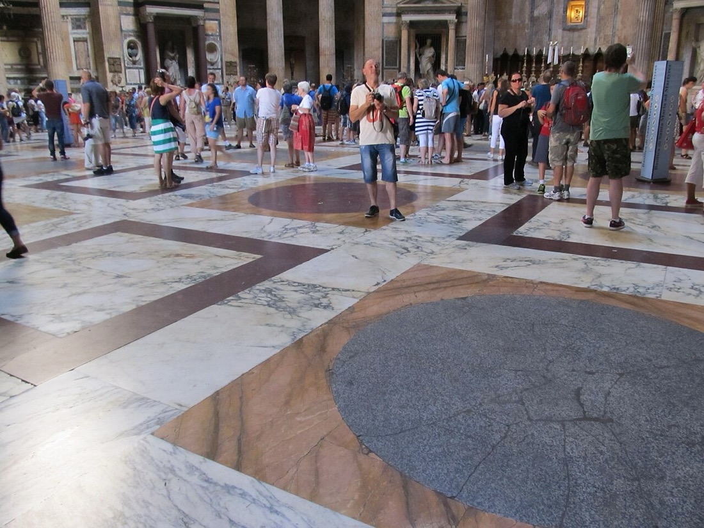
daryl_mitchell from Saskatoon, Saskatchewan, Canada · CC BY-SA 2.0 · Wikimedia Commons. The central drain, the practical answer to an open roof. 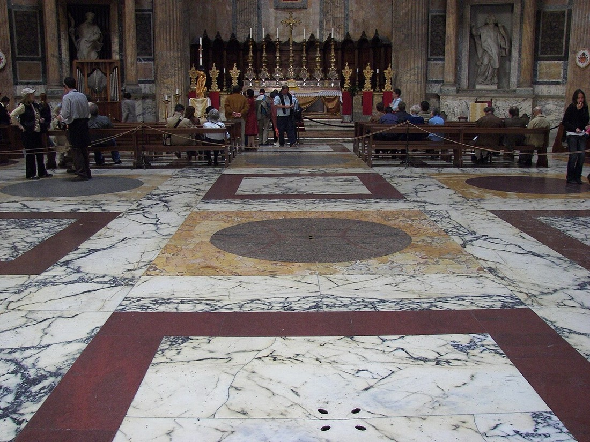
Wknight94 · CC BY-SA 3.0 · Wikimedia Commons. The 19th-century pavement follows the ancient pattern of porphyry and granite. -
The bronze doors
The great doors in the portico are about seven metres high and were long believed to be Roman. They may be ancient, they may be a later replacement; either way their scale tells you what the entrance was meant to feel like. The frame and threshold are worth a look before you go in.
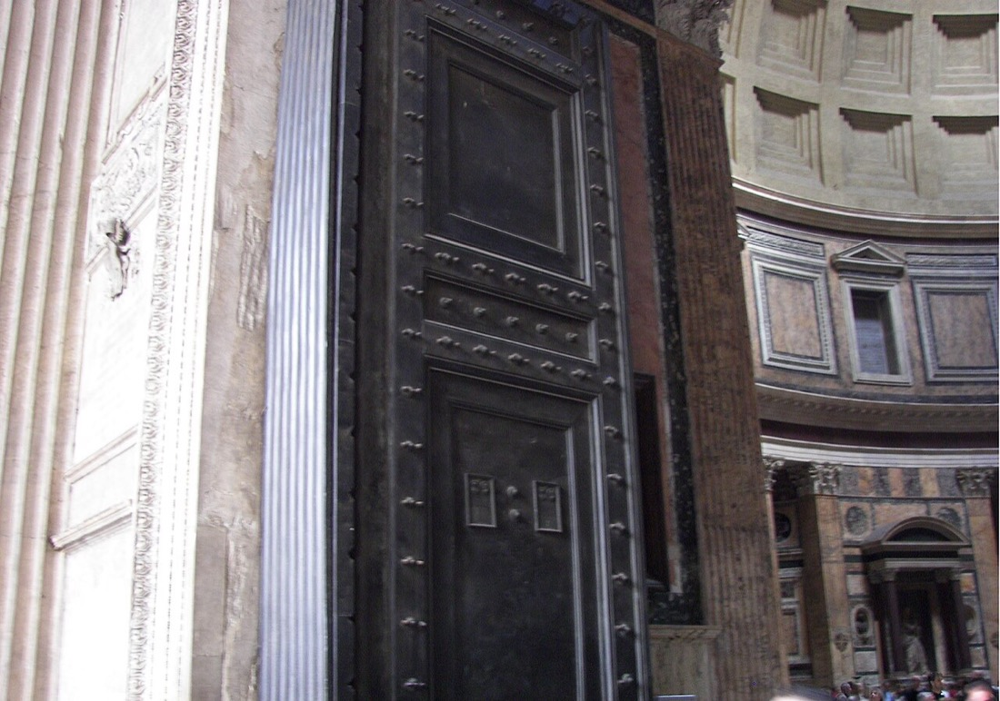
Wknight94 · CC BY-SA 3.0 · Wikimedia Commons. The bronze doors, about seven metres high. 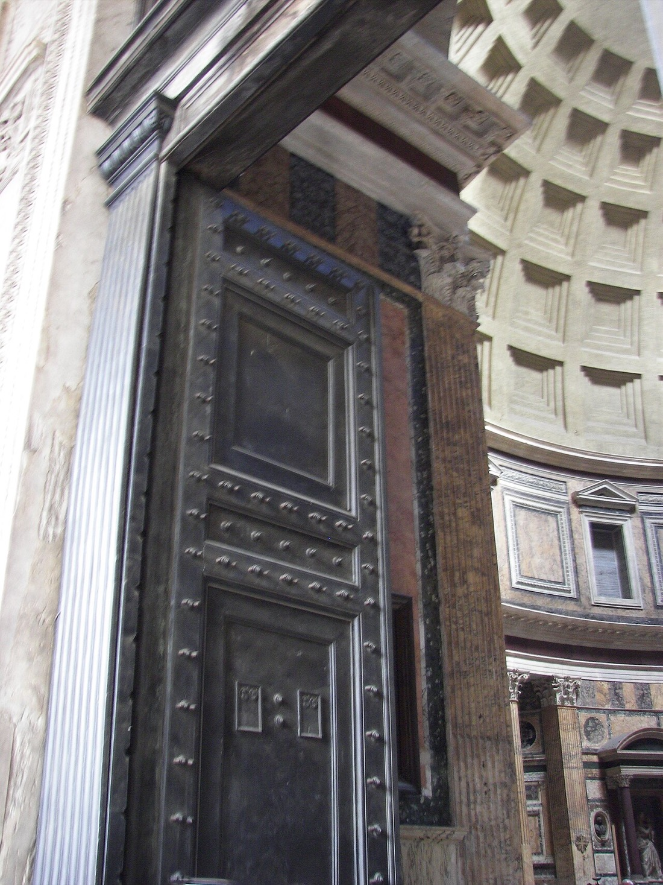
Wknight94 · CC BY-SA 3.0 · Wikimedia Commons. The door leaves in detail: bronze, patched and repaired over centuries. -
The granite columns
Sixteen columns, each a single block of granite, eight across the front and eight behind. Some are grey, some pink; the shafts came from Egypt and the capitals are Corinthian. The porch was originally open to a colonnaded square, and the columns still carry the pediment without any visible deflection — a useful reminder that the Romans were better at engineering than at matching a facade to a rotunda.
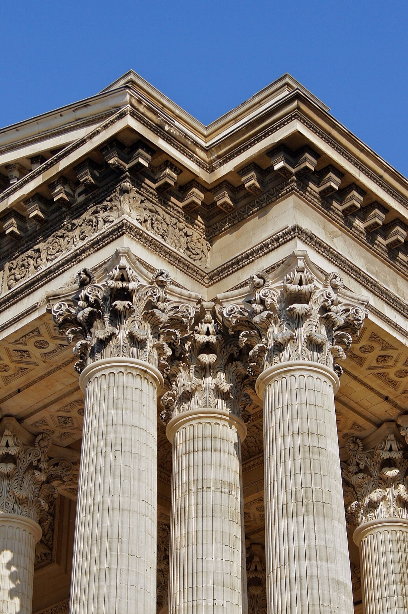
Jebulon · Public domain · Wikimedia Commons. A Corinthian capital of the portico. 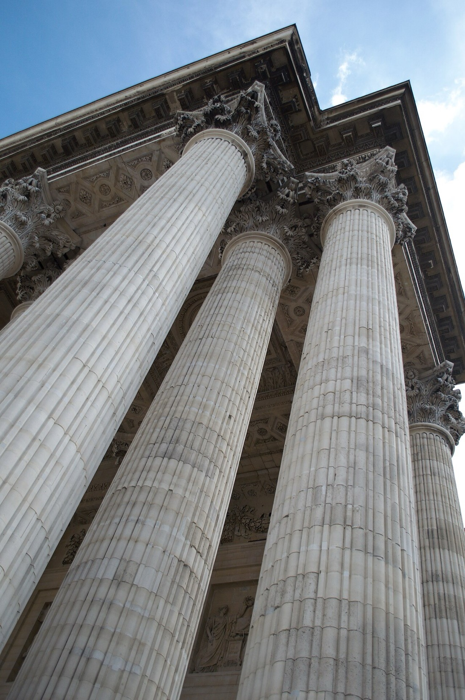
Dk58 - Renaud · CC BY 2.0 · Wikimedia Commons. Single-block granite shafts, grey and pink. -
The apse and the icon
At the far end of the rotunda, the apse holds a medieval icon of the Virgin and Child, framed by a 19th-century restoration of the original decoration. The high altar stands under it, and the whole end of the room is a reminder that this is still a working church, not a museum set.
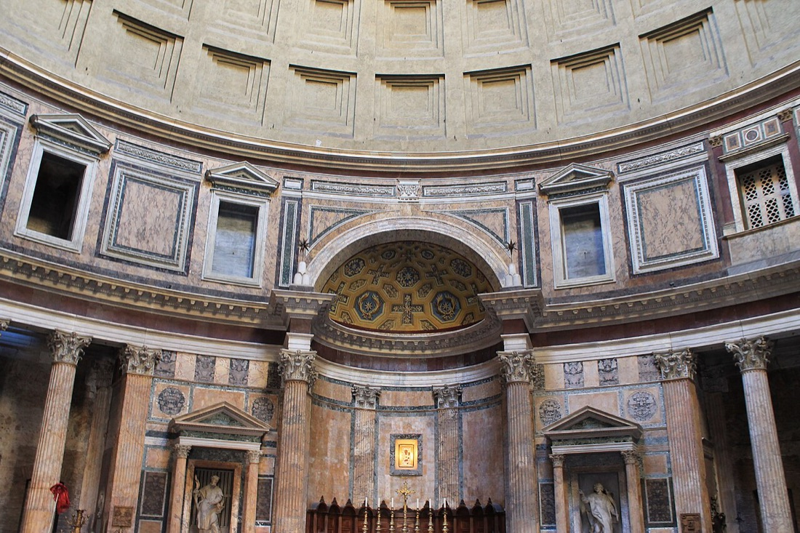
John Samuel · CC BY-SA 4.0 · Wikimedia Commons 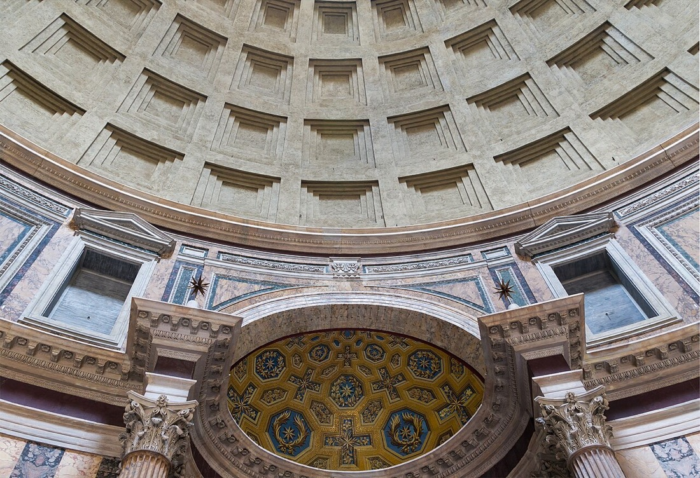
Jebulon · CC0 · Wikimedia Commons. The apse and high altar; the icon is the devotional centre of the church. -
The tombs
To the left of the apse is Raphael's tomb, marked by a simple marble slab and the epitaph written by Pietro Bembo: Ille hic est Raphael, timuit quo sospite vinci, rerum magna parens et moriente mori — "Here lies Raphael; while he lived, great Nature feared to be outdone; when he died, she feared to die." Opposite and around the rotunda are the tombs of Vittorio Emanuele II, first king of unified Italy, and Umberto I, installed after 1878 and 1900. The Pantheon is a church, a museum and a national shrine at once.
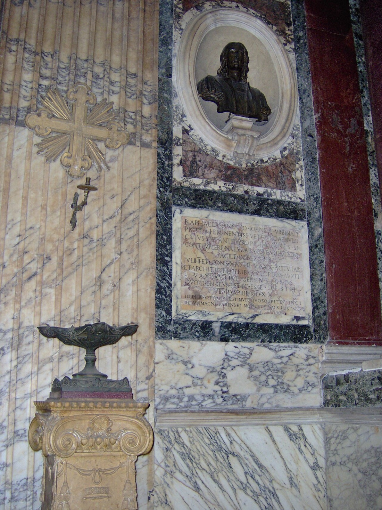
Pe-Jo · CC BY-SA 4.0 · Wikimedia Commons. Raphael's tomb and Bembo's epitaph. 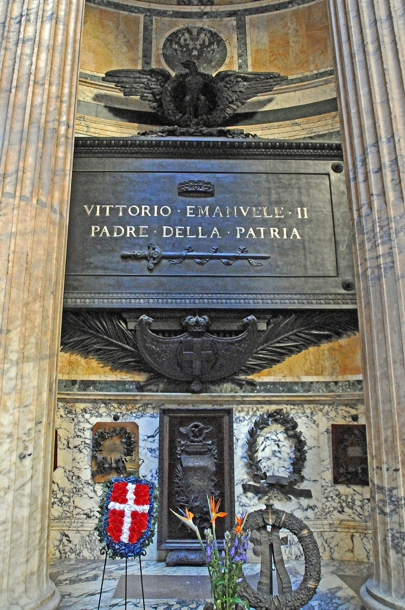
Dennis G. Jarvis · CC BY-SA 2.0 · Wikimedia Commons. Vittorio Emanuele II, the first king of unified Italy. -
The inscription and the pediment
Across the porch runs the most quoted inscription in Roman architecture: M·AGRIPPA·L·F·COS·TERTIVM·FECIT — Marcus Agrippa, son of Lucius, consul for the third time, made this. The "third time" dates the original temple to 27 BC, not to Hadrian's rebuild. Hadrian kept the older lettering, either out of respect or as a deliberate archaism, and the result has misled visitors for centuries.
Look above it. The pediment is bare, and the porch is a conventional temple front attached to a much wider rotunda; the join is visible from the piazza. The inscription is the building's loudest claim, and the pediment is its quiet admission that the claim is complicated.
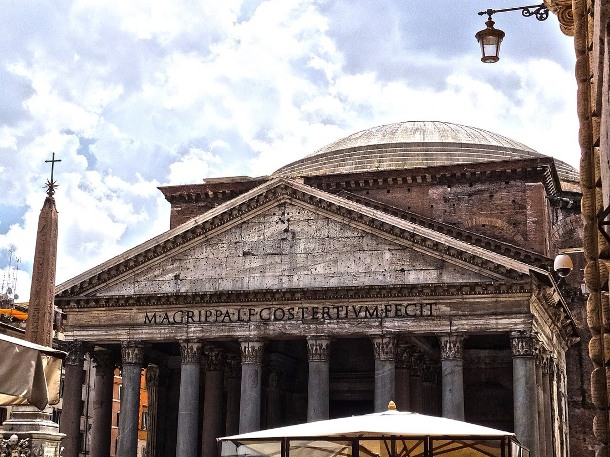
Amphipolis · CC BY-SA 2.0 · Wikimedia Commons. The porch from the piazza: pediment, frieze and inscription. 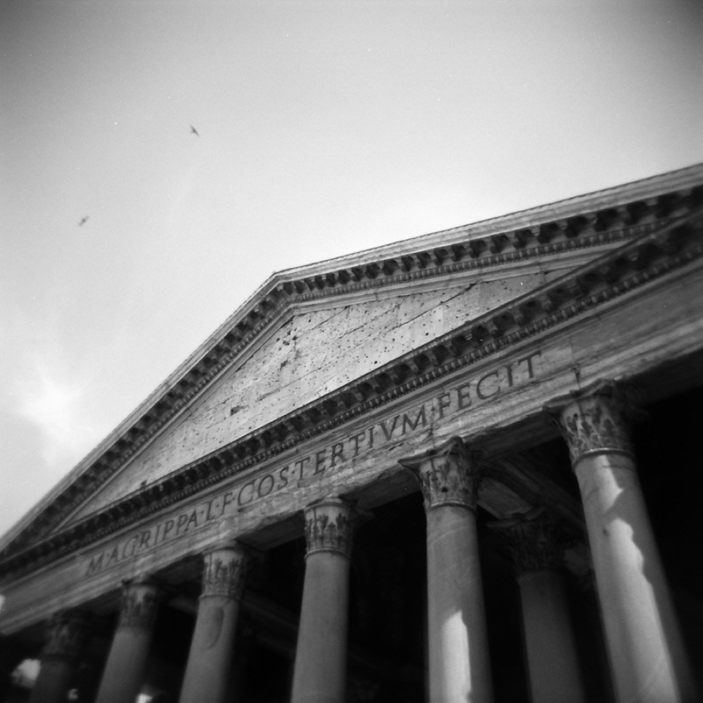
Kent Mercurio · CC BY 2.0 · Wikimedia Commons. M·AGRIPPA·L·F·COS·TERTIVM·FECIT, cut across the frieze. -
The brick exterior and the missing towers
Walk round the outside. The rotunda is brick-faced concrete, not marble: its original facing is gone, and the exposed brick courses show how the dome was built in horizontal lifts. In the 17th century two bell towers were added above the porch, popularly called the "asses' ears"; they were demolished in 1883, and the skyline returned to the ancient profile.
The exterior is also a record of reuse: the building has been a temple, a church since 609, and a tomb for painters and kings. The brick is what survives when the facing is gone — which is most of the story of Rome.
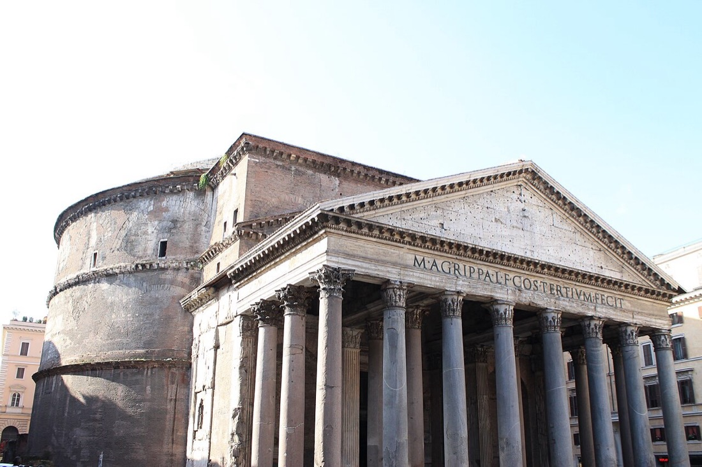
John Samuel · CC BY-SA 4.0 · Wikimedia Commons. The brick rotunda behind the porch. 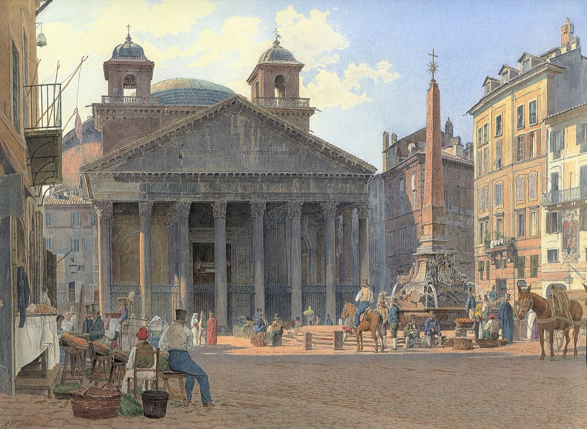
Jakob Alt · Public domain · Wikimedia Commons. Jakob Alt's 1836 view, with the bell towers still on the porch.
,_Dome_interior.jpg){kind=link}

_2015_3.JPG){kind=link}

.jpg){kind=link}

_entrance_door.jpg){kind=link}
_entrance_door_2.jpg){kind=link}

.jpg){kind=link}
_-_Interior_07.jpg){kind=link}


.jpg){kind=link}
.jpg){kind=link}
.jpg){kind=link}
_-_Exterior_10.jpg){kind=link}

A temple that became a church
In 608 the Byzantine emperor Phocas gave the building to Pope Boniface IV, who consecrated it in 609 as Santa Maria ad Martyres — St Mary and the Martyrs — and had a great number of relics transferred there from the catacombs. That is the reason the Pantheon survived. Buildings that lost their function were quarried; a church kept its walls.
The dedication also explains the building's odd double identity. The Christian furnishings were added without destroying the Roman shell, and later popes treated the interior as a place for tombs and monuments rather than for wholesale rebuilding. Raphael's burial here in 1520 made the Pantheon a artists' shrine, and the kings' tombs after 1878 made it a shrine of the Italian state. The two claims — church and nation — sit together without resolving.
The building was not untouched. In the 17th century Urban VIII Barberini removed the bronze trusses from the portico roof; tradition says the metal went to Bernini's baldachin in St Peter's and to cannon. The Roman lampoon quod non fecerunt barbari, fecerunt Barberini — "what the barbarians did not do, the Barberinis did" — dates from that episode. The bronze roof tiles had already gone in the 7th century. The marble revetment was stripped and replaced over the centuries, and the present floor is a 19th-century restoration.
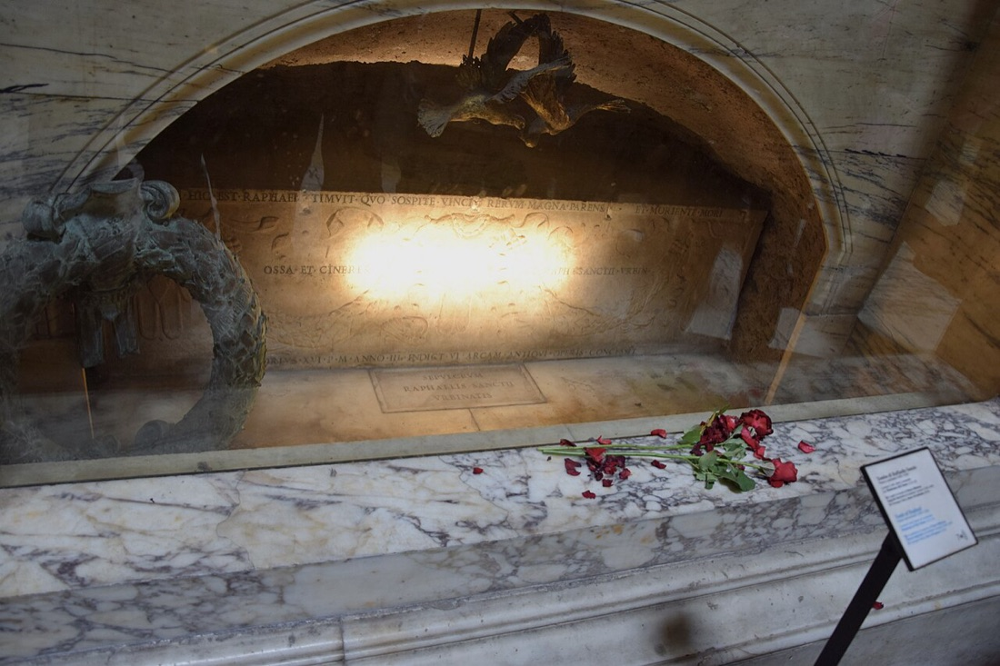
The dome's influence is another story. Brunelleschi measured it in Rome before designing Florence Cathedral's dome, Michelangelo studied it before St Peter's, and the sphere-with-an-oculus became the model for domed churches and public buildings across Europe and America. The Pantheon is not the largest dome ever built, but it is the one that proved the type could be built at all.
Visiting
The Pantheon stands on Piazza della Rotonda, in the heart of the historic centre, a few minutes' walk from Piazza Navona and Santa Maria sopra Minerva. The entrance is through the portico on the north side of the piazza; the queue forms under the columns and along the front.
As of 2026 there is an admission charge: a €5 ticket was introduced in 2023, with a booking fee if you reserve online and reduced or free access for some categories. The church is still a place of worship, so access may be restricted during Mass, and entry for worshippers is handled separately from tourist visits. Check the official visitor site (pantheonroma.com) or the national museum ticketing service (museiitaliani.it) for current prices, booking rules and exceptions before you go.
Opening hours are roughly 9:00–19:00 Monday to Saturday and 9:00–18:00 on Sunday, with last entry about half an hour before closing; the schedule shifts for religious feasts and holidays. Dress is the same as for any Roman church: shoulders and knees covered, hats off, quiet voices. Photography is allowed, but flash and tripods are not, and Mass is celebrated at the altars through the day.
Come early. By mid-morning the piazza is crowded and the interior is full of guided groups; at opening the oculus throws its beam across an almost empty floor, which is the best version of the building. The piazza itself is worth a few minutes: the fountain by Giacomo della Porta, the Egyptian obelisk of Ramses II set on it in 1711, and the cafe tables that have made this one of Rome's most photographed squares.
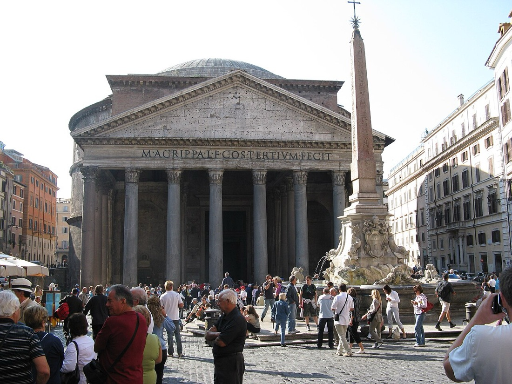